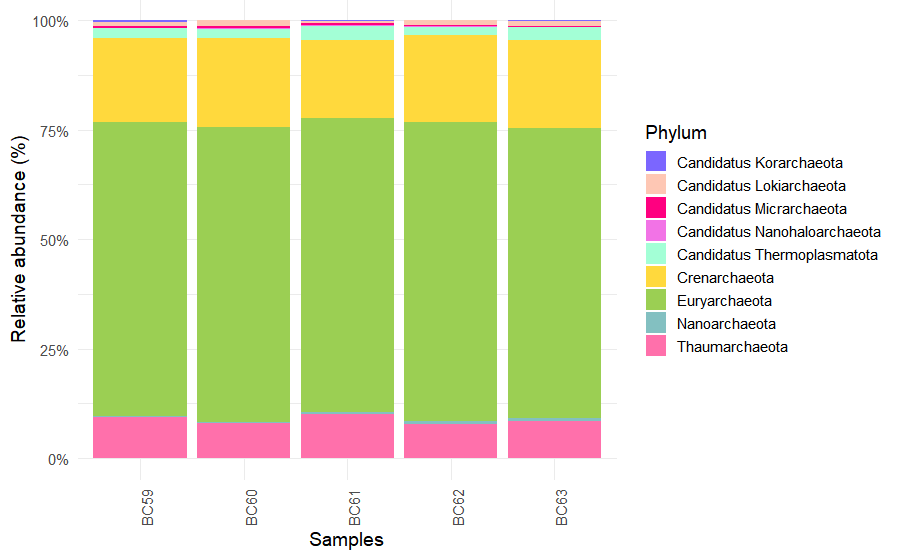
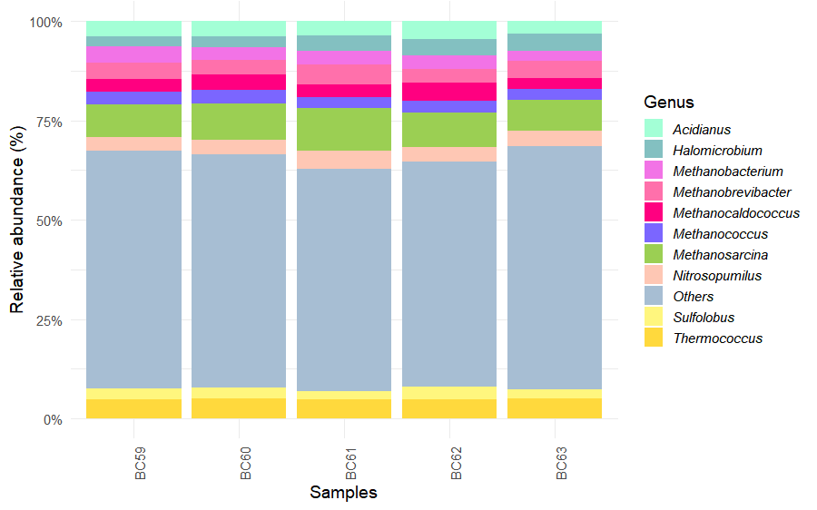

Code
library(phyloseq)
library(ggplot2)
library(dplyr)
dlaeve_physeq <- import_biom("dlaeve_taxonomy.biom")Following taxonomic classification and exploratory visualization, downstream analyses were conducted in R to characterize microbial groups associated with Deroceras laeve.
This chapter presents an example workflow using Archaea as a representative taxonomic subset. The same strategy can be applied to Bacteria, Fungi, Viruses, or other groups of interest by modifying the selected taxonomic level.
Kraken2-derived BIOM files were imported into R using the phyloseq package.
library(phyloseq)
library(ggplot2)
library(dplyr)
dlaeve_physeq <- import_biom("dlaeve_taxonomy.biom")Taxonomic labels were curated by removing unnecessary prefixes and assigning standardized rank names.
dlaeve_physeq@tax_table@.Data <-
substring(dlaeve_physeq@tax_table@.Data, 4)
colnames(dlaeve_physeq@tax_table@.Data) <- c(
"Kingdom", "Phylum", "Class",
"Order", "Family", "Genus", "Species"
)Taxonomic Selection
Reads assigned to Archaea were extracted for focused downstream analyses.
archaea <- subset_taxa(
dlaeve_physeq,
Kingdom == "Archaea"
)Only classified genera were retained for abundance summaries and visualization.
archaea <- subset_taxa(
archaea,
Genus != ""
)percentages <- transform_sample_counts(
archaea,
function(x) x * 100 / sum(x)
)percentages_glom <- tax_glom(
percentages,
taxrank = "Phylum"
)
percentages_df <- psmelt(
percentages_glom
)The ten most abundant phyla were selected, while less abundant taxa were grouped as Others.
abundance_phylum <- percentages_df %>%
mutate(Phylum = as.character(Phylum)) %>%
group_by(Phylum) %>%
summarize(Abundance = mean(Abundance)) %>%
arrange(desc(Abundance)) %>%
slice_head(n = 10)Relative abundance plots were generated with ggplot2 using custom color palettes.
Custom colors:
colors <- c(
"#9BCF53", "#FFD93D", "#FF70AB",
"#A3FFD6", "#FEC7B4", "#83C0C1",
"#FF0080", "#F273E6", "#7B66FF",
"#FFF67E"
)
colors_by_phylum <- setNames(
colors[1:nrow(abundance_phylum)],
abundance_phylum$Phylum
)
colors_by_phylum["Others"] <- "#A7BED3"Plot:
ggplot(
percentages_df,
aes(
x = Sample,
y = Abundance,
fill = Phylum
)
) +
geom_bar(
stat = "identity",
position = "fill"
) +
scale_fill_manual(values = colors_by_phylum) +
theme_minimal(base_size = 14) +
theme(
axis.text.x = element_text(
angle = 90,
hjust = 1
)
) +
scale_y_continuous(
labels = scales::percent_format()
) +
labs(
x = "Samples",
y = "Relative abundance (%)"
)
To further refine the archaeal community profile, reads were also summarized at the genus level.
genus_glom <- tax_glom(
percentages,
taxrank = "Genus"
)
genus_df <- psmelt(
genus_glom
)The ten most abundant genera were selected, while less abundant taxa were grouped as Others.
abundance_genus <- genus_df %>%
mutate(
Genus = as.character(Genus)
) %>%
group_by(Genus) %>%
summarize(
Abundance = mean(Abundance),
.groups = "drop"
) %>%
arrange(desc(Abundance)) %>%
slice_head(n = 10)
genus_df <- genus_df %>%
mutate(
Genus = ifelse(
Genus %in% abundance_genus$Genus,
Genus,
"Others"
)
)Relative abundance plots were generated using the same custom palette employed for phylum-level summaries.
colors_by_genus <- setNames(
colors[1:nrow(abundance_genus)],
abundance_genus$Genus
)
colors_by_genus["Others"] <- "#A7BED3"
ggplot(
genus_df,
aes(
x = Sample,
y = Abundance,
fill = Genus
)
) +
geom_bar(
stat = "identity",
position = "fill"
) +
scale_fill_manual(
values = colors_by_genus
) +
theme_minimal(base_size = 14) +
theme(
axis.text.x = element_text(
angle = 90,
hjust = 1
),
legend.text = element_text(
face = "italic"
)
) +
scale_y_continuous(
labels = scales::percent_format()
) +
labs(
x = "Samples",
y = "Relative abundance (%)"
)
The same analytical framework can be applied to other microbial groups by modifying the selected taxonomic subset according to the rank of interest and the structure of the dataset.
For example, some groups can be selected directly at the Kingdom level:
subset_taxa(dlaeve_physeq, Kingdom == "Bacteria")
subset_taxa(dlaeve_physeq, Kingdom == "Viruses")In other cases, more specific taxonomic ranks may be used. For fungal analyses, representative phyla were selected as follows:
subset_taxa( dlaeve_physeq,
Phylum %in% c("Ascomycota", "Basidiomycota", "Microsporidia" )
)